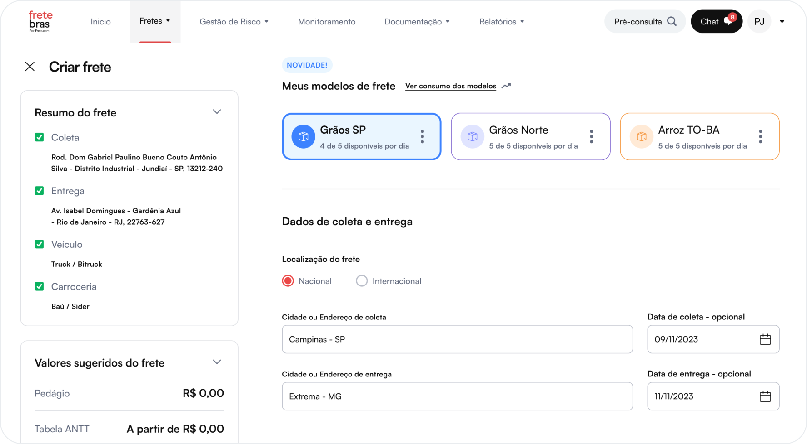
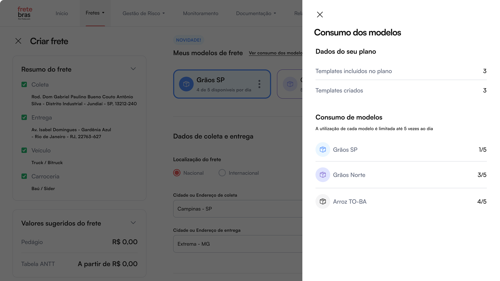
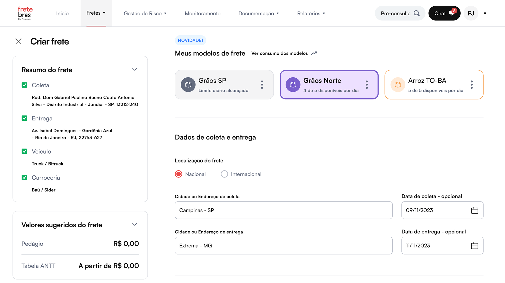
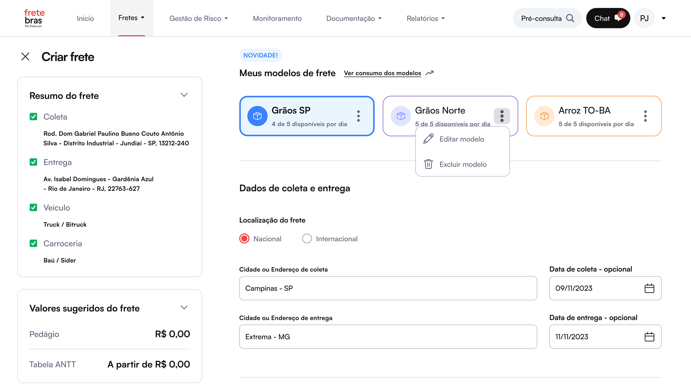
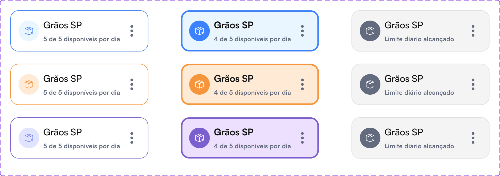

Work
Reduzindo em até 70% o tempo de cadastro e publicação de um frete

Desafio
Transportadoras publicam dezenas — às vezes centenas — de fretes por dia na Fretebras. Ao analisar os dados de uso, identifiquei um padrão: a maioria das cargas de uma mesma transportadora compartilhava informações quase idênticas, variando apenas valores e destinos. Mesmo assim, cada publicação exigia o preenchimento completo do formulário.
O tempo médio de cadastro era superior a 2 minutos — um gargalo operacional que se multiplicava a cada frete publicado e impactava diretamente o volume de ofertas na plataforma.

Solução e resultados
A partir da análise de métricas de uso, mapeei os campos que se repetiam com maior frequência entre publicações de uma mesma transportadora. Com essa hipótese validada pelos dados, conduzi rodadas de exploração de soluções e validações internas com o time de produto e engenharia para chegar no formato mais viável. A solução final: templates reutilizáveis. O operador cadastra um frete normalmente e, ao final, salva a configuração como modelo. Nas publicações seguintes, parte do template e ajusta apenas o que muda — eliminando retrabalho sem alterar o fluxo já conhecido..
Após o rollout para toda a base, o tempo médio de cadastro caiu de 2 minutos para 40 segundos — uma redução de ~67%.


